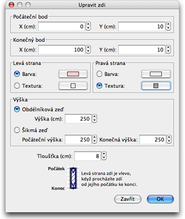

| Úprava zdí | |||
Umístìní a délku zdí, mù¾ete mìnit buï pohybem my¹i, nebo pomocí menu Plán > Upravit zdi.... Máte-li ji¾ jednu zeï vybranou, mù¾ete pohybovat jejím poèáteèním i koncovým bodem pomocí indikátorù na obou koncích oznaèené zdi.
|

|
Umístíte-li ukazatel my¹i nad poèáteèní nebo koneèný bod vybrané zdi, mù¾ete jimi pohybovat pomocí jejich indikátorù stylem "Chy» a pou¾ij".
Kliknutím na jeden z nich se uká¾e pomocník zobrazující délku vybrané zdi. Zdi mù¾ete rovnì¾ upravovat pomocí menu, které spustíte buï dvojtým kliknutím na vybrané zdi v plánu, nebo v hlavím menu po oznaèení vybrané zdi Plán > Upravit zdi....  V menu úprav zdi mù¾ete mìnit nastavení umístìní jejího poèáteèního a koneèného bodu, barvu nebo texturu její levé i pravé strany, její sílu/tlou¹»ku a vý¹ku. |
|